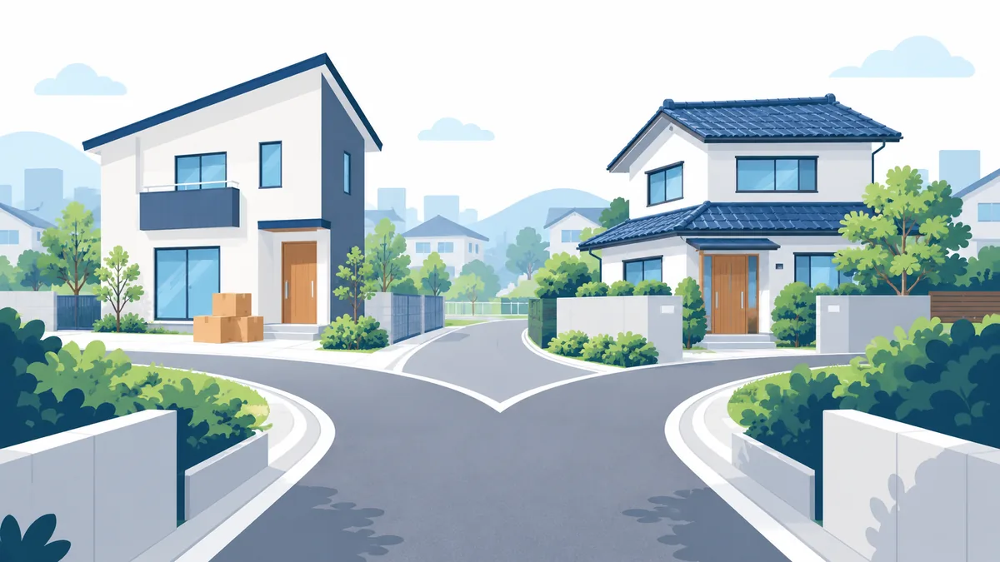

購入と同時にまとめる場合と、借り換えでまとめる場合の違い

「住宅ローンで他の借入をまとめる」という言葉は、実は 2 つの違う場面で使われています。ひとつは、賃貸にお住まいの方が住宅を購入するときに、既存のお借入れを合わせて検討する場面。もうひとつは、すでに持ち家があり住宅ローンを返済中の方が、借り換えのときに他のお借入れを合わせて検討する場面です。検索して情報を集めると両方が混ざって出てくるため、ここで整理します。
- 一般的な情報の整理です。特定の金融機関の商品を案内するものではありません。
- 当窓口でご案内しているのは、主に「購入と同時に検討する」場面です。借り換えについては一般的な情報として触れています。
2 つの場面の違い
| 購入と同時にまとめる | 借り換えでまとめる | |
|---|---|---|
| いまの住まい | 賃貸（または実家など） | 持ち家（住宅ローン返済中） |
| 住宅ローン | 新しく組む | 別の金融機関に借り換える、または同じ金融機関で組み直す |
| まとめる資金の位置づけ | 住宅の取得資金に加えて検討する | 借り換え後の住宅ローンに加えて検討する |
| 主な検討材料 | 家賃と住宅ローン返済額の比較、頭金、物件の選択 | 現在の金利との差、残りの返済期間、借り換えの諸費用 |
| 相談先 | 不動産会社・住宅ローンの窓口 | 金融機関・住宅ローンの窓口 |
購入と同時にまとめる場合
賃貸にお住まいで、カードローンや車のローンの返済をしながら家賃も払っている方に関係する場面です。住宅を購入する際の住宅ローンとあわせて、既存のお借入れの返済に充てる資金を検討できる金融機関の商品を使う考え方です。
向いているのは: これまで払っていた家賃を住宅ローンの返済に振り替えたい方、複数のお支払いを整理して家計の管理をしやすくしたい方、住まいを資産として持ちたい方です。
注意点: 物件の価格と既存のお借入れの合計が、収入に対して無理のない範囲に収まる必要があります。まとめられる金額には上限があり、対象外のお借入れもあります。仕組みの詳細は こちらのコラム をご覧ください。
借り換えでまとめる場合
すでに持ち家があり、住宅ローンを返済中の方に関係する場面です。住宅ローンをより条件のよい金融機関に借り換える際、または同じ金融機関で組み直す際に、他のお借入れの返済資金を合わせて検討できる商品があります。
向いているのは: 現在の住宅ローンの金利が高く、借り換えによる負担の見直しが見込める方、住宅ローンの残りの期間が十分にある方です。
注意点: 借り換えには手数料・登記費用などの諸費用がかかります。金利差が小さい場合や残りの期間が短い場合は、まとめる利点より諸費用が上回ることがあります。また、物件の現在の価値と住宅ローンの残高の関係によっては、まとめる余地がないこともあります。
どちらにも共通する注意点
- 返済期間が長くなる分、利息を含めた総支払額は現状より増える可能性があります。
- 現在返済が遅れているお借入れがある場合は、金融機関の判断でご利用いただけないことがあります。
- お申込みの際は、既存のお借入れの内容を正確に申告する必要があります。
- 住宅の取得以外の目的に充てた部分は、住宅ローン控除の対象外となる場合があります。
自分はどちらに当てはまるか
いまのお住まいが賃貸なら「購入と同時に検討する」場面、持ち家で住宅ローン返済中なら「借り換えで検討する」場面です。当窓口では、主に前者のご相談をお受けしています。持ち家をお持ちの方からのご相談も、状況をお伺いしたうえで、ご案内できる範囲をお伝えします。